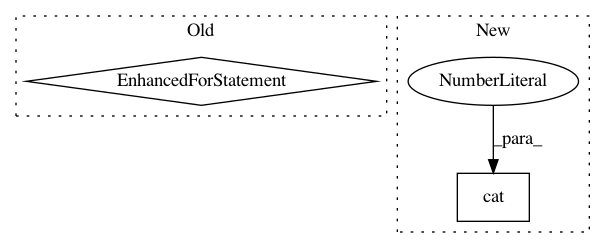

a178a47269013e94c4756f94a2c9a0c373e04a18,examples/next-frame.py,VideoFrameSampler,seed,#VideoFrameSampler#,556
Before Change
self.rg = self.G(self.rc, context={"z":self.rz})
self.g = self.input_cache[self.gan.frames-1]
self.i=0
for i in range(self.gan.frames):
g = self.input_cache[i]
self.z = self.EZ(g, context={"z":self.z})
self.c = self.EC(self.z, context={"c":self.c})
self.g = self.G(self.z)
self.i = 0
def refresh_input_cache(self):
self.input_cache = list(torch.chunk(self.gan.inputs.next(), self.gan.frames, dim=1))
for i in range(len(self.input_cache)-1):
self.gan.inputs.next()
After Change
self.state = self.gan.gen_state()
print("STATET1", self.state.shape)
enc = self.gan.encoder(torch.cat(self.input_cache[:-1], dim=1))
self.state = self.gan.state(enc, context={"past": self.state})
print("STATET", self.state.shape)
g = self.gan.decoder(self.state)
In pattern: SUPERPATTERN
Frequency: 3
Non-data size: 2
Instances
Project Name: HyperGAN/HyperGAN
Commit Name: a178a47269013e94c4756f94a2c9a0c373e04a18
Time: 2021-01-02
Author: mikkel@255bits.com
File Name: examples/next-frame.py
Class Name: VideoFrameSampler
Method Name: seed
Project Name: LiyuanLucasLiu/LM-LSTM-CRF
Commit Name: a71f5fd71cc1e48d0bfe541a6a7945be8c6327f9
Time: 2017-09-16
Author: llychinalz@gmail.com
File Name: model/utils.py
Class Name:
Method Name: load_embedding_wlm
Project Name: eriklindernoren/PyTorch-YOLOv3
Commit Name: 9b0a0dd6fe7b4ac021d91acc6b4f96b403dd6b67
Time: 2019-04-26
Author: eriklindernoren@live.se
File Name: models.py
Class Name: Darknet
Method Name: forward